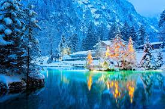
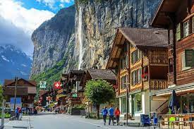

Switzerland is a small mountainous country located in central Europe
Switzerland is a small mountainous country located in central Europe. This landlocked country is about the size of New Jersey and is between France and Italy. It is also bordered by Austria, Germany, and Liechtenstein.
Most of the population lives in the plateau which is between the high Alps in the south and the Jura mountains in the north. The mountainous area in the south is sparsely populated. Switzerland is one of the world’s wealthiest countries. The Swiss are well known for their watches and clocks.
There is not a single official language in Switzerland. People speak one of several languages, including Swiss German, French, and Italian. The Swiss Alps are high, snow-covered mountains most of which are over 13,000 feet (4,000 meters). The most famous peak is the Matterhorn which is 14,692 feet (4,478 meters) tall, but the highest peak is Dufourspitze at 15,203 feet (4,634 meters).
Scientists are concerned that glaciers in the Swiss Alps have lost a lot of ice coverage in the past 40 years. This may be related to global climate change. Rapid melting of the glaciers could cause flooding to the villages below.
Most animals in Switzerland live in the mountains. The ibex, a species of mountain goat, was hunted to near extinction in the early 1800s. The species has since been reintroduced and more than 15,000 ibex now live in the Swiss Alps. Hikers may also encounter chamois, another goatlike animal, and marmots. The forests of Switzerland are also home to deer, rabbits, foxes, badgers, squirrels, and many bird species.
Switzerland



Switzerland is a small mountainous country located in central Europe. This landlocked country is about the size of New Jersey and is between France and Italy. It is also bordered by Austria, Germany, and Liechtenstein. Most of the population lives in the plateau which is between the high Alps in the south and the Jura mountains in the north. The mountainous area in the south is sparsely populated. Switzerland is one of the world’s wealthiest countries. The Swiss are well known for their watches and clocks. There is not a single official language in Switzerland. People speak one of several languages, including Swiss German, French, and Italian. The Swiss Alps are high, snow-covered mountains most of which are over 13,000 feet (4,000 meters). The most famous peak is the Matterhorn which is 14,692 feet (4,478 meters) tall, but the highest peak is Dufourspitze at 15,203 feet (4,634 meters). Scientists are concerned that glaciers in the Swiss Alps have lost a lot of ice coverage in the past 40 years. This may be related to global climate change. Rapid melting of the glaciers could cause flooding to the villages below. Most animals in Switzerland live in the mountains. The ibex, a species of mountain goat, was hunted to near extinction in the early 1800s. The species has since been reintroduced and more than 15,000 ibex now live in the Swiss Alps. Hikers may also encounter chamois, another goatlike animal, and marmots. The forests of Switzerland are also home to deer, rabbits, foxes, badgers, squirrels, and many bird species.